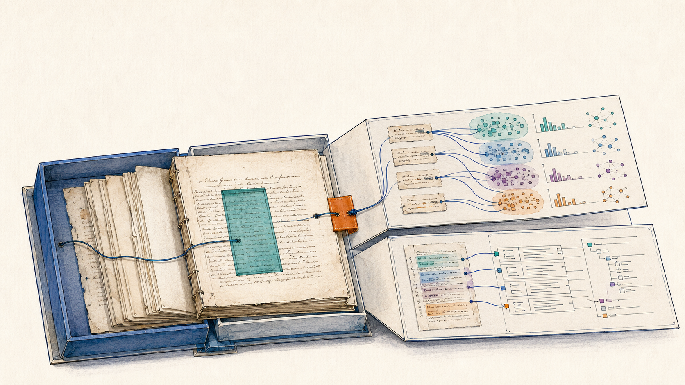

5 and 6 October 2026
HEDIT KI-Workshop 2026
Forschungsstelle HEDIT, Universität Heidelberg
Date 5 and 6 October 2026 Event Forschungsstelle HEDIT, Universität Heidelberg Audience researchers from the editions projects of the research centre Teaching language German Status planned

Specialisation
Two days of five to six hours each at an edition research centre, three hours in the morning and three in the afternoon, taught in German for researchers of the centre's own editions projects. This is the second workshop for that constituency and follows a predecessor of November 2025 whose programme is the template. Three changes against it are declared in the sources. The model landscape moves to the frontier state at teaching time and includes a locally runnable open-weight alternative, agentic coding moves from a side remark into a central method block, and two operational demonstration objects enter, an editing tool for TEI and an agentic edition pipeline.
Day one is theory and method. The fundamentals block pairs vibe coding against informed vibe coding as its framing, the second block applies knowledge and context engineering to TEI-XML modelling and TEI generation and introduces the knowledge vault as a steering instrument, and the third block moves into agentic coding with Promptotyping as the structured middle path between vibe coding and classical software development. Day two is a workshop on the participants' own material in two parts, so the second half of the instance produces prototypes rather than examples.
Participants bring access to a frontier model, their own material as plaintext, XML, DOCX or images, and a one-page description of that material; the host surveys prior experience before the workshop. The worked demonstration example is a letter from Stefan Zweig Digital whose TEI header carries a CC BY licence, with the pipeline artefacts held complete in the associated recognition pipeline repository, alongside synthetic fixtures of the editing tool. Material of another partner collection stays out of the shared folder because of its rights state and is shown on the projector at most.
Two gaps are worth naming. No slide texts exist for this instance in any source, so the deck is still to be derived from the Full Slide Deck. The fifth module is not programmed at all, which the sources record as an absence rather than as a decision, and whether it is added needs an operator answer. The registered title is an inference from an internal heading, because no externally announced title is documented.
Taught sequence
- Day one, fundamentals of generative AI at the 2026 state, how models work, the frontier landscape, prompt engineering.
- Day one, TEI with large language models, meaning TEI-XML modelling, TEI generation, context engineering and context rot, the knowledge vault as a steering instrument.
- Day one, agentic coding and edition workflows, with the editing tool and the agentic edition pipeline as a forkable template.
- Day two, part one, building the knowledge vault and a prototype from the participants' own material.
- Day two, part two, deepening that into a TEI-XML edition, adding the multi-repo vault pattern, closing with a plenary presentation of the prototypes.
Module coverage
- Understanding Large Language Models, taught in full Day one block one, with the frontier landscape at teaching time and locally runnable open-weight models.
- Prompt Engineering, taught in full Continues block one, with vibe coding against informed vibe coding as the framing pair.
- Knowledge and Context Engineering, taught in full Day one block two, specialised on TEI, with context rot and the knowledge vault as the steering instrument for edition work.
- Agentic Engineering, taught in full and the emphasis of the instance Day one block three and the whole of day two, with the editing tool as the convergence point of the edition tooling and the multi-repo vault pattern for longer projects.
- Critical Perspectives and Governance, not included Neither the concept nor the learning objectives name a verification, governance or limits block. The sources document the absence and give no reason for it, which makes this the one gap of the instance against the full corpus.
Materials
- Slide deck (HEDIT Heidelberg 2026) To be derived from the Full Slide Deck. The register carries no link yet.
- Lecture Notes (HEDIT Heidelberg 2026) In preparation in the instance folder. No slide texts exist for this instance in any source.
- Participant folder Held in the operator's own drive and deliberately not linked here, because part of the demonstration material is rights-restricted.
Provenance
This instance is a documented specialisation of the Full Slide Deck and the Full Lecture Notes, which are maintained once and cut into five modules. What this instance selects, cuts and adds is recorded in its repository folder, workshops/2026-10-05-hedit-heidelberg.